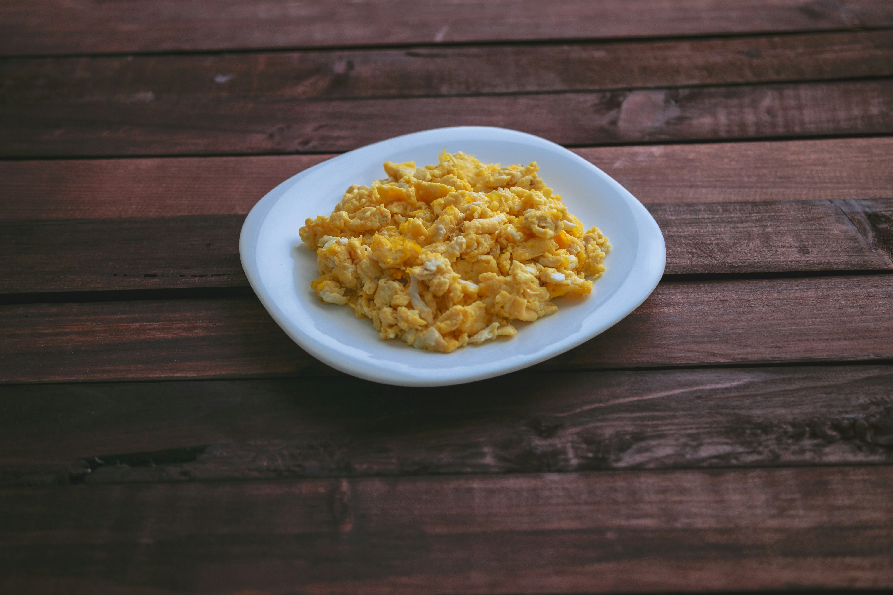

Baked Scrambled Eggs
Home

These baked scrambled eggs are light and fluffy and are a snap to put together for a big crowd. I usually make two pans for our Christmas and Easter brunch, and I never have many leftovers!
ingredients
- ½ cup butter, melted
- 24 large eggs
- 2 ½ cups milk
- 2 ¼ teaspoons salt
Steps and Directions
- Gather all ingredients. Preheat the oven to 350 degrees F (175 degrees C).
- Pour melted butter into a 9x13-inch glass baking dish.
- Whisk eggs and salt together in a large bowl until well blended. Gradually whisk in milk. Pour egg mixture into the buttered dish
- Bake uncovered in the preheated oven for 10 to 15 minutes. Stir egg mixture and continue to bake about 10 minutes more; stir again. Continue to bake until eggs are just set and no longer runny, about 5 more minutes.
- Serve and enjoy!